Five directions, each at the three scales that matter. Squint at the 16px column first; anything that dies there is out. Favicon and wordmark SVGs flip ink with the OS color scheme, so toggle appearance to judge dark tabs. Squircles are stand-ins for the system mask.
One square of the grid: cell, clue number, letter. The shipped app icon restaged as the whole identity. Below icon scale the number retires.
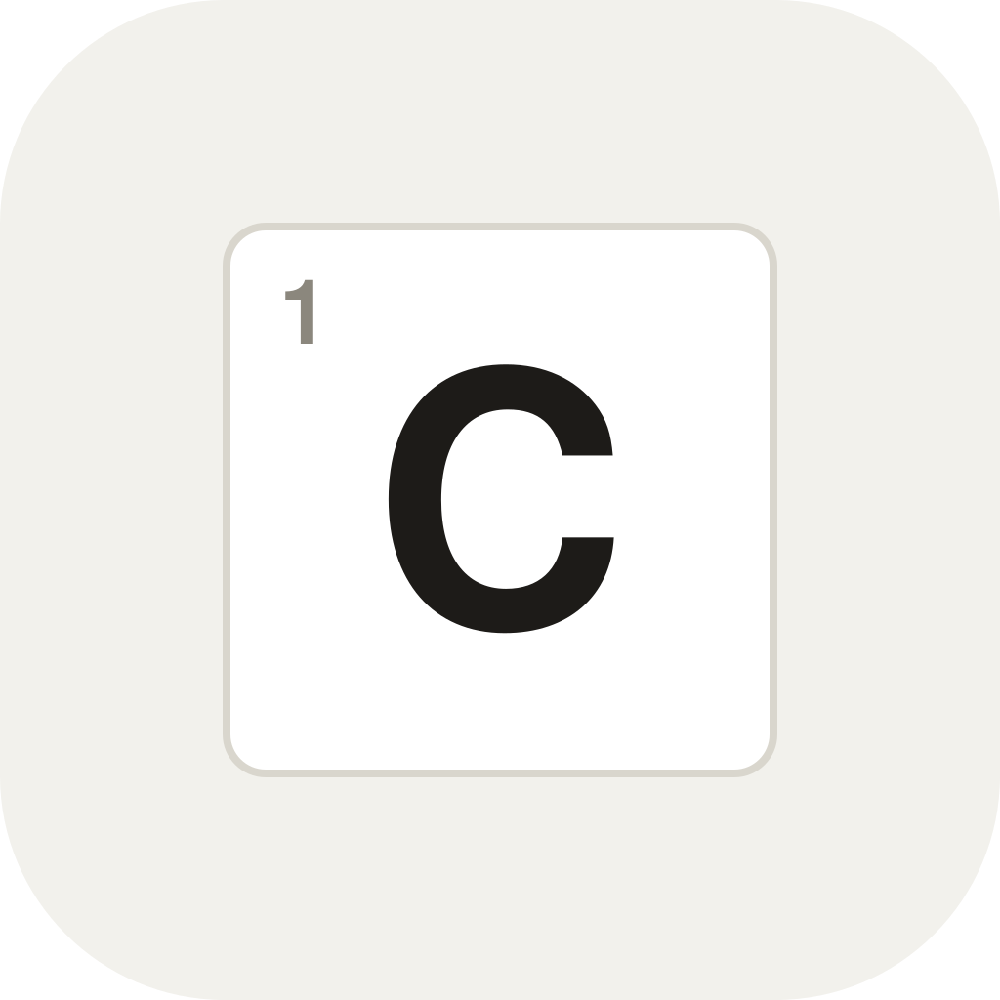
icon 116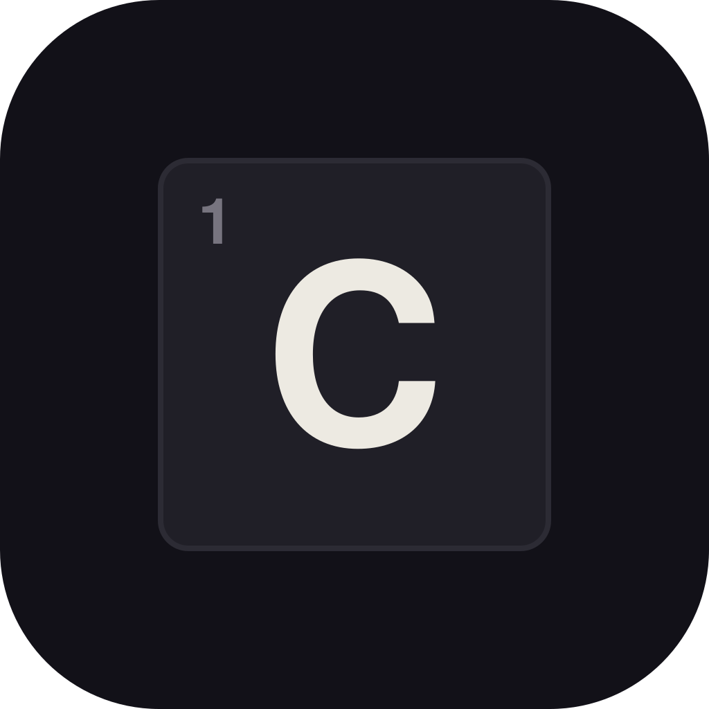
icon darkA four-cell across and a three-cell down sharing one square; the shared square is the one gold accent. The product itself: two solvers' words meeting in a cell.
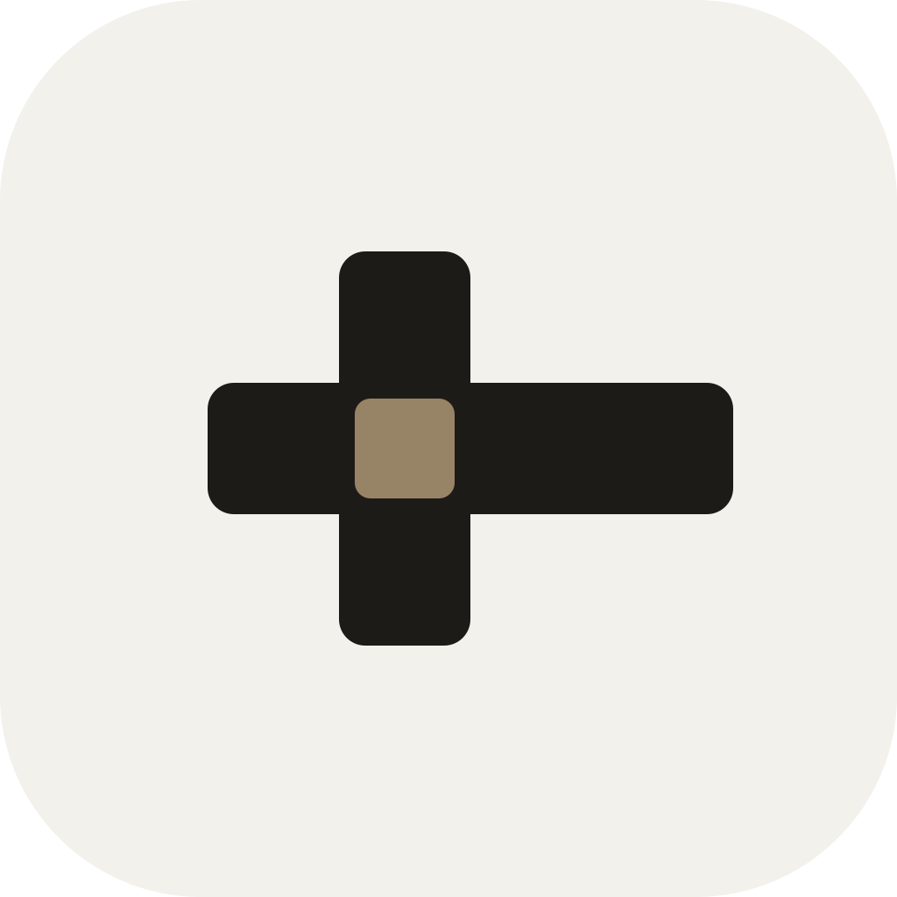
icon 116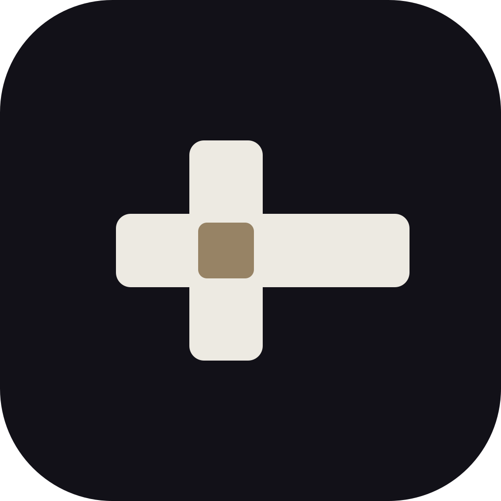
icon dark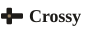
sidebarThe smallest true crossword fragment: a 2x2 tile, two cells open, two ink blocks on the diagonal. One flat object, no type at all.
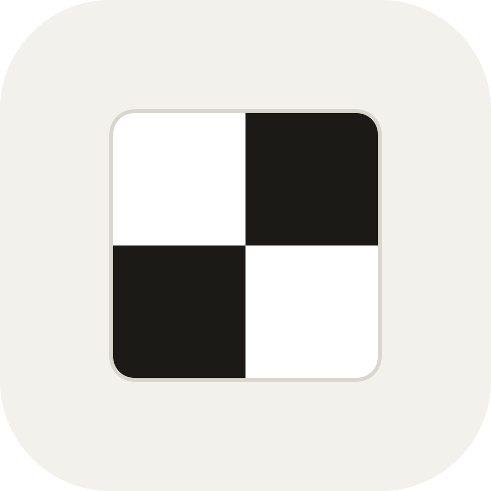
icon 116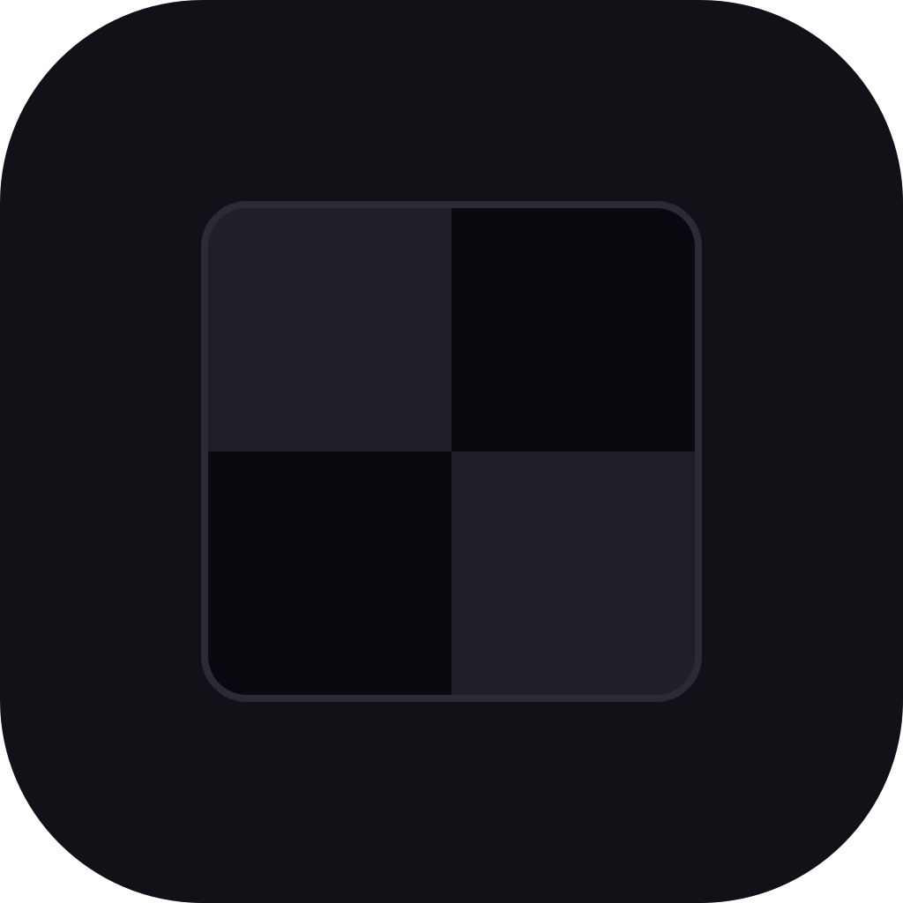
icon darkA round-capped C stroke with the cell docked in its aperture, completing the implied circle. The letter carrying its square.
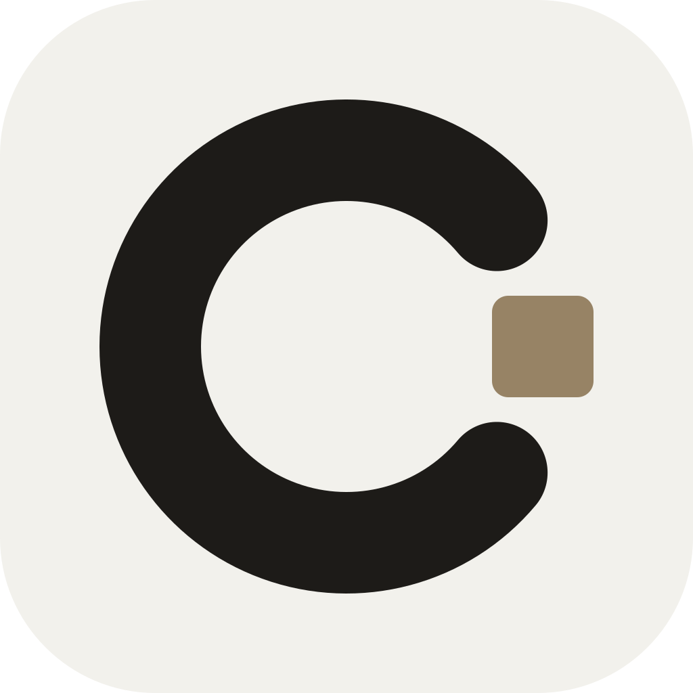
icon 116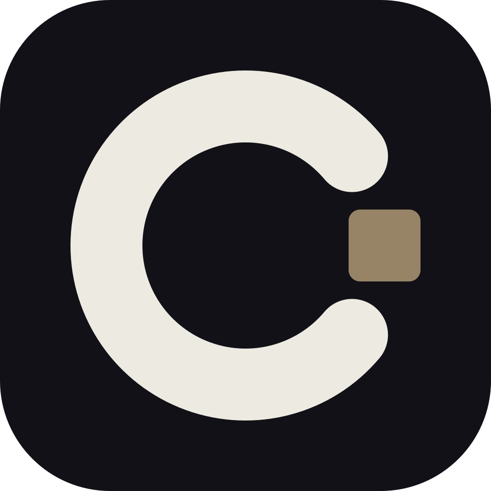
icon darkThe web's drawn Cy monogram, out of its gold disc, run bare as the mark everywhere. The favicon column is its honest stress test.
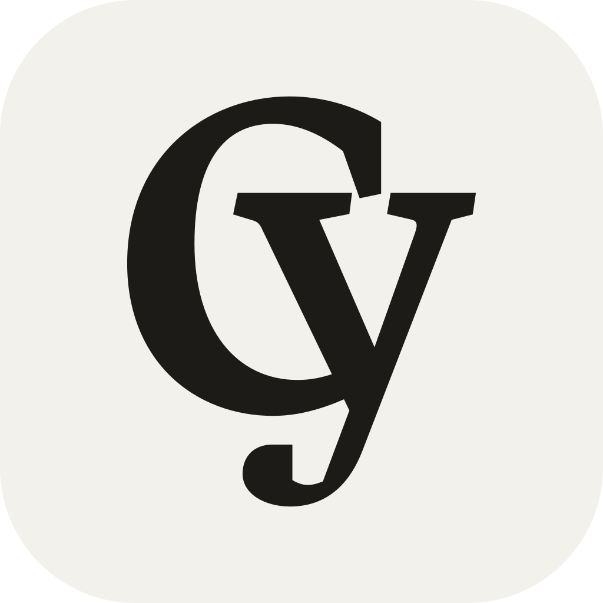
icon 116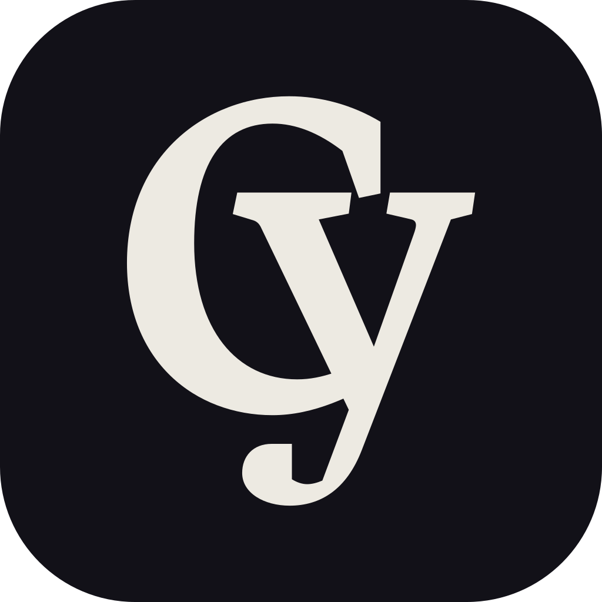
icon darkColors are the real tokens: Grounds.swift (Studio and Observatory) and web gold-9 #978365. Wordmark type is the sidebar recipe (display serif semibold 18); without Harfang Pro installed it falls back to Georgia, judge the relationship, not the letterforms. The survivor gets rebuilt properly on tokens: ImageRenderer app icon, scheme-aware SVG favicon, Logo swap in primitives.tsx.